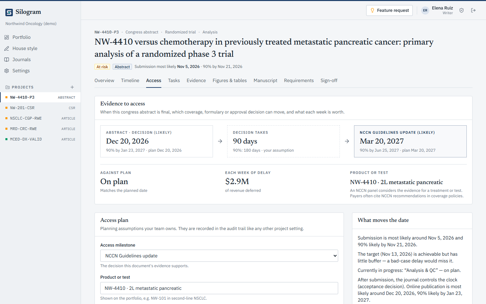

Speed to access
Publish sooner. Reach coverage sooner.
Coverage, formulary and guideline decisions wait for peer-reviewed evidence. Much of the time between a locked analysis and a submitted paper is internal: drafting, checking numbers, review rounds and sign-off. That is the part Silogram shortens, and the part you control.
From analysis to revenue, and where the weeks go.
- 1 · Analysis locked
Outputs exist
Tables, listings and figures are final. The evidence is real but not yet usable by a payer.
- 2 · Where Silogram works
Draft, check, review, sign
Drafting from code, numbers linked to outputs, house style, tracked review and sign-off. Weeks to months, and yours to shorten.
- 3 · The journal
Peer review
About 100 days from submission to acceptance at a typical biomedical journal, and largely outside your control.1
- 4 · The decision
Coverage and revenue
A MolDX assessment in weeks, an NCCN update 5 to 6 months after the panel, commercial plans a median of 4.2 months after approval.243
What earlier access is worth to you.
Use your own numbers. The calculator moves revenue earlier by the weeks you gain; it ignores ramp-up, discounting and payer mix.
For scale: a peer-reviewed Tufts CSDD study put a day of delay at about $500,000 in average lifetime sales for a new drug (its white paper on the same work says about $800,000). Those are averages of lifetime sales, not measured losses from delay, and mid-market products differ.7

In the product
The access plan.
Link each document to the decision it supports: a MolDX assessment, an NCCN submission, a formulary review, a joint assessment or an approval. Silogram moves the access date with the document's forecast and prices every day gained or lost against plan.
- Most-likely and 90% dates
- Your assumptions, recorded in the audit trail
- A portfolio view across every decision
The rule is documented. The speed-up is yours to measure.
Documented
Payers, guideline panels and Medicare contractors look for peer-reviewed evidence, and the paper often arrives months or years after the analysis. See the pharma and diagnostics pages for the rules and their sources.
Not measured anywhere
No study measures how much sooner a coverage decision comes when a paper comes sooner. Decisions usually cite several studies, and some follow annual cycles.8
What a pilot measures
Time from locked outputs to submission on one live document, against your own recent history. That number goes into the calculator above.
Sources
- 1Himmelstein. The history of publishing delays (analysis of PubMed dates, 2016).
- 2Palmetto GBA. MolDX General FAQs.
- 3Haque et al. JAMA Oncol. 2023. PMC10587821.
- 4NCCN. Guidelines submission process FAQs (November 2024).
- 5Valsecchi et al. J Cancer Policy. 2025. PubMed 40268192.
- 6Cochrane. How long do clinical trials take to publish their results? (methodology review, November 2024).
- 7Smith, DiMasi and Getz. Ther Innov Regul Sci. 2024;58:855–862. PubMed 38773058.
- 8Sexton et al. JAMA Health Forum. 2023. PMC10403784.